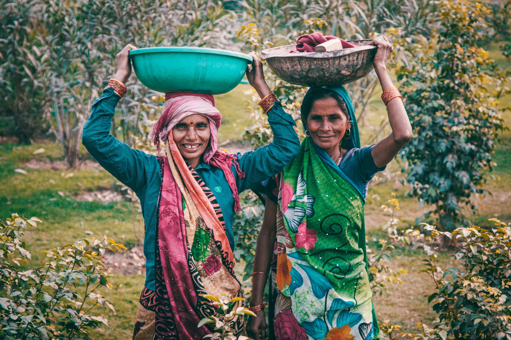
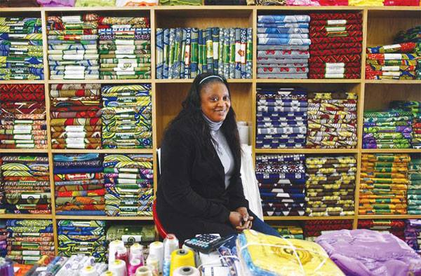

According to a report from the Norwegian Department of Social Research, Norway would have been 3300 billion Norwegian crowns poorer without women at work. The welfare of a country depends on the fact that women need to work more. That applies not only to Norway, but to many other countries where women dont work at all. In some parts of the world, it is still that women do not have the same opportunitets as men to be independent and provide. The situation for women across the world is different. They have different cultural mindsets, as well as different skills and knowledge. But what does the knowledge benefit if they can not be used for any reasonable work? This also goes for women who are creative and can contribute with anything practicle. By contributing to the society, women can also feel like they are a part of something bigger than themselves and feel that they are in use of something good. As Oprah Winfrey has stated "I’ve come to believe that each of us has a personal calling that’s as unique as a fingerprint — and that the best way to succeed is to discover what you love and then find a way to offer it to others in the form of service, working hard, and also allowing the energy of the universe to lead you.” But here are some actual reasons why we want to give women opportunities to work. You earn, you learn and by that you become independent. You prove to be a better employee and by that earn the trust of your community. You connect, improve, understand human behvior, your self-esteem increases, you feel empowered, you learn life skills, then inspire others and last but not least become a good role model.

Why ComShare?
We believe that some of the worlds finest entrepreneurs are the women of the developing world, waiting for the opportunity to create their businesses. They want to create and run businesses which benefit them and their communities, which is what ComShare wants as well. We believe in partnering with those who are able and willing to create local businesses that make a change.

the poverty problem
Discuss our project with us!